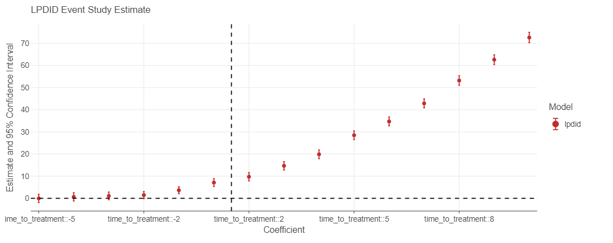

PyFixest


PyFixest is a Python implementation of the formidable fixest package. The package aims to mimic fixest syntax and functionality as closely as Python allows. For a quick introduction, see the tutorial or take a look at the regression chapter of Arthur Turrell’s book on Coding for Economists.
Functionality
At the moment, PyFixest supports
- OLS and IV Regression
- Poisson Regression
- Multiple Estimation Syntax
- Several Robust and Cluster Robust Variance-Covariance Types
- Wild Cluster Bootstrap Inference (via wildboottest)
- Difference-in-Difference Estimators:
- The canonical Two-Way Fixed Effects Estimator
- Gardner’s two-stage (“
Did2s”) estimator is available via thepyfixest.did.didmodule - Basic Versions of the Local Projections estimator following Dube et al (2023)
Installation
You can install the release version from PyPi by running
pip install pyfixestor the development version from github by running
pip install git+https://github.com/s3alfisc/pyfixest.gitNews
PyFixest 0.14 adds support for the local projections “DID2s” estimator:
import pandas as pd
import numpy as np
from pyfixest.did.lpdid import lpdid
df_het = pd.read_stata("pyfixest/did/data/lpdidtestdata1.dta")
df_het = df_het.astype(np.float64)
fit_lpdid = lpdid(
df_het,
yname="Y",
idname="unit",
tname="time",
gname="event_date",
att=True,
pre_window=5,
post_window=10,
)
fit_lpdid.tidy()
# Estimate Std. Error t value Pr(>|t|) 2.5 % 97.5 % N
#treat_diff 31.794381 0.755459 42.086191 0.0 30.312812 33.27595 28709.0fit_lpdid = lpdid(
df_het,
yname="Y",
idname="unit",
tname="time",
gname="event_date",
att=False,
pre_window=5,
post_window=10,
)
fit_lpdid.iplot(figsize = [1000, 400], xintercept = 5.5, yintercept = 0)
Benchmarks
All benchmarks follow the fixest benchmarks. All non-pyfixest timings are taken from the fixest benchmarks.


Quickstart
For more details, take a look at the tutorial.
from pyfixest.estimation import feols
from pyfixest.utils import get_data
data = get_data()
# OLS Estimation
fit = feols("Y~X1 | csw0(f1, f2)", data = data, vcov = {'CRV1':'group_id'})
fit.summary()
# ###
#
# Model: OLS
# Dep. var.: Y
# Inference: CRV1
# Observations: 998
#
# | Coefficient | Estimate | Std. Error | t value | Pr(>|t|) | 2.5 % | 97.5 % |
# |:--------------|-----------:|-------------:|----------:|-----------:|--------:|---------:|
# | Intercept | 2.206 | 0.078 | 28.304 | 0.000 | 2.043 | 2.370 |
# | X1 | 0.358 | 0.051 | 6.962 | 0.000 | 0.250 | 0.466 |
# ---
# RMSE: 1.765 Adj. R2: 0.024 Adj. R2 Within: 0.024
# ###
#
# Model: OLS
# Dep. var.: Y
# Fixed effects: f1
# Inference: CRV1
# Observations: 997
#
# | Coefficient | Estimate | Std. Error | t value | Pr(>|t|) | 2.5 % | 97.5 % |
# |:--------------|-----------:|-------------:|----------:|-----------:|--------:|---------:|
# | X1 | 0.411 | 0.040 | 10.188 | 0.000 | 0.326 | 0.495 |
# ---
# RMSE: 1.421 Adj. R2: 0.048 Adj. R2 Within: 0.048
# ###
#
# Model: OLS
# Dep. var.: Y
# Fixed effects: f1+f2
# Inference: CRV1
# Observations: 997
#
# | Coefficient | Estimate | Std. Error | t value | Pr(>|t|) | 2.5 % | 97.5 % |
# |:--------------|-----------:|-------------:|----------:|-----------:|--------:|---------:|
# | X1 | 0.431 | 0.035 | 12.319 | 0.000 | 0.358 | 0.505 |
# ---
# RMSE: 1.2 Adj. R2: 0.07 Adj. R2 Within: 0.07Standard Errors can be adjusted after estimation, “on-the-fly”:
fit1 = fit.fetch_model(0)
fit1.vcov("hetero").tidy()
# Model: Y~X1
# ###
#
# Model: OLS
# Dep. var.: Y
# Inference: hetero
# Observations: 998
#
# | Coefficient | Estimate | Std. Error | t value | Pr(>|t|) | 2.5 % | 97.5 % |
# |:--------------|-----------:|-------------:|----------:|-----------:|--------:|---------:|
# | Intercept | 2.206 | 0.088 | 25.180 | 0.000 | 2.034 | 2.378 |
# | X1 | 0.358 | 0.068 | 5.254 | 0.000 | 0.224 | 0.491 |
# ---
# RMSE: 1.765 Adj. R2: 0.024 Adj. R2 Within: 0.024Last, PyFixest also supports IV estimation via three part formula syntax:
fit_iv = feols("Y ~ 1 | f1 | X1 ~ Z1", data = data)
fit_iv.summary()
# ###
#
# Model: IV
# Dep. var.: Y
# Fixed effects: f1
# Inference: CRV1
# Observations: 997
#
# | Coefficient | Estimate | Std. Error | t value | Pr(>|t|) | 2.5 % | 97.5 % |
# |:--------------|-----------:|-------------:|----------:|-----------:|--------:|---------:|
# | X1 | 0.479 | 0.096 | 4.979 | 0.000 | 0.282 | 0.676 |
# ---